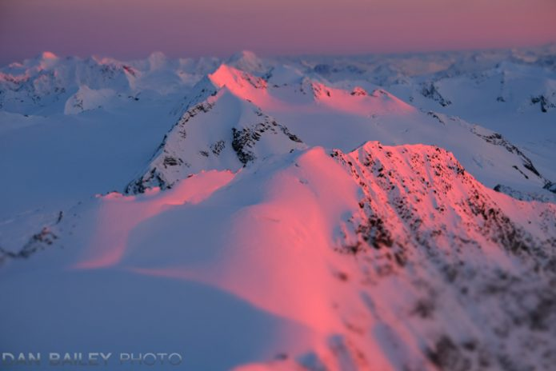

All About Alpenglows:
Basic Facts-
- Derived from the German word, Alpenglühen, meaning "Alps glow"
- Optical Phenomenon
- Horizontal reddish or pinkish glow near the horizon opposite to the Sun
When Does It Occur and Where Can You See It?
Occurs in the range known as Twilight which is after Sunset and before Sunrise
More commonly occurs at Sunset than Sunrise due to the longer atmospheric path
Morning colors are more pink and purple compared to evening colors which are more orange and red
Some popular spots to see an alpenglow are mountain peaks such as Half Dome in Yosemite, Sulphur Mountain
in Banff and the Teton Range in Wyoming
What Causes An Alpenglow?
- When the sun is low on the horizon, its light travels through a thicker layer of atmosphere
- In turn the shorter wavelengths of blue and violet light are scattered away, leaving the longer wavelengths of red and orange light to reach mountain tops
- The resulting light is then reflected off the surfaces of mountains especially by airborne precipation, icy crystals and snowy peaks
- This effect is amplified by moisture in the atmosphere, further magnifying this glowing effect

Above is a stunning picture of an alpenglow